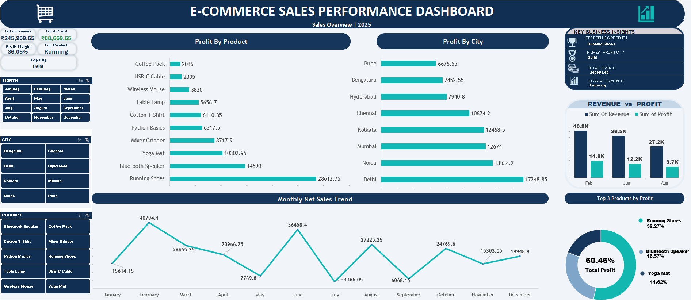

01
MICROSOFT EXCEL · DATA ANALYSIS · DASHBOARD
E-Commerce Sales Performance Dashboard
Developed an interactive Excel dashboard to analyze e-commerce revenue, profitability, product performance, and city-wise sales. Used PivotTables, PivotCharts, and dynamic slicers to track KPIs, identify top-performing products, and visualize monthly sales trends.

View Project on GitHub ↗↗